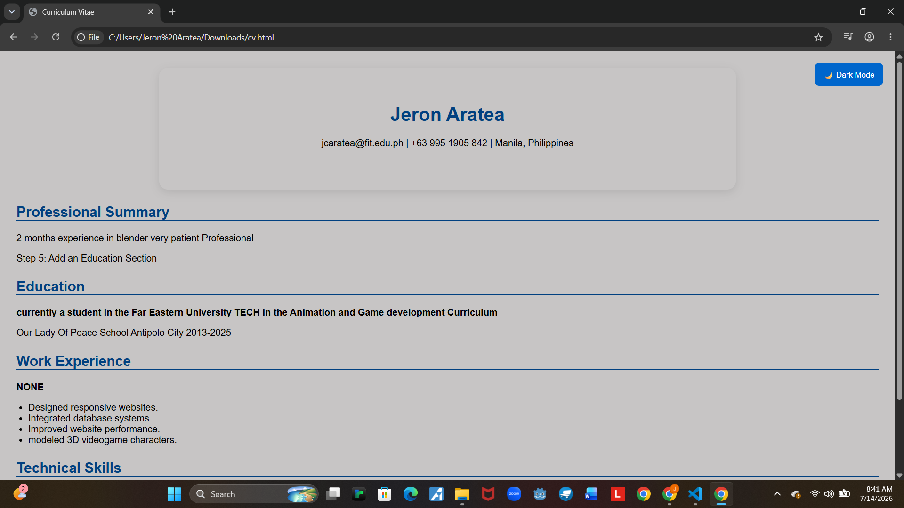

About:
In this Project in which i deem is the most important thing that i have learned the whole trimester. is that we were told to create a Light and Dark mode feature and i personally believe that every website and app should have this.
